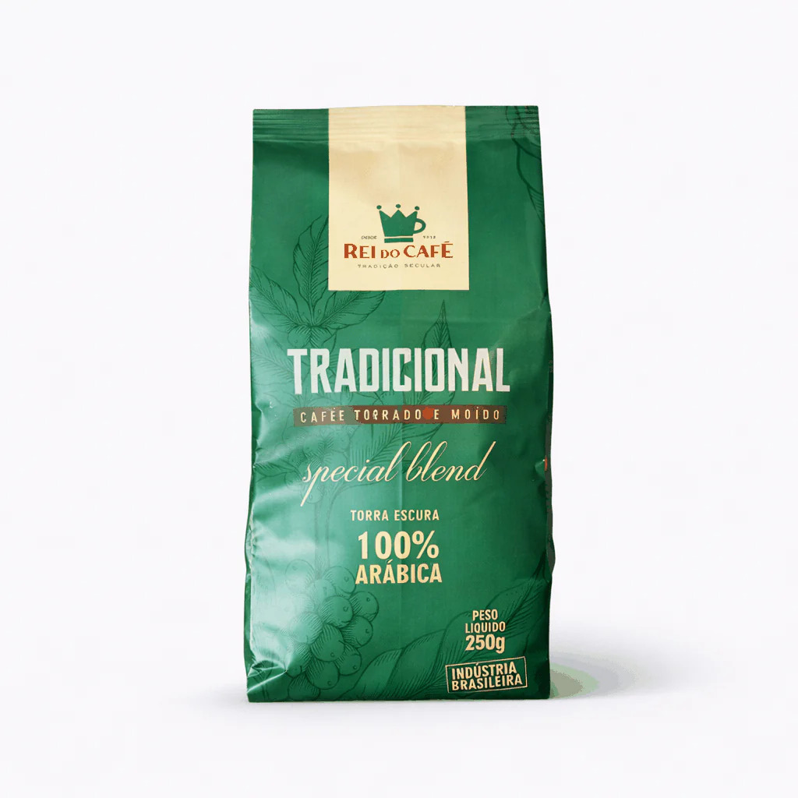
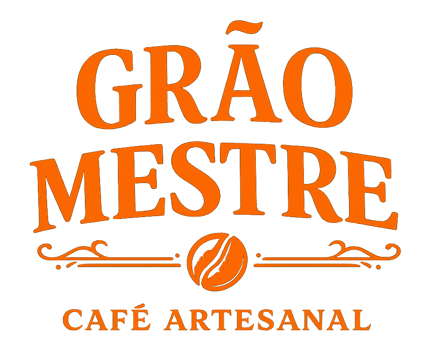
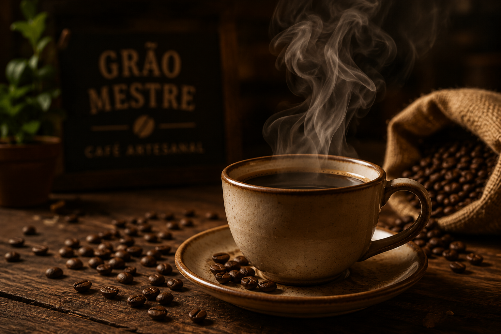
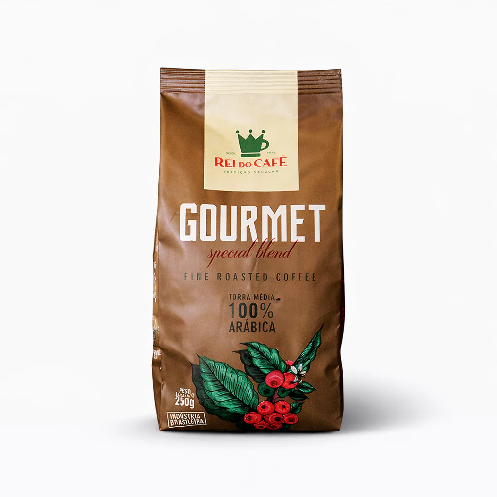
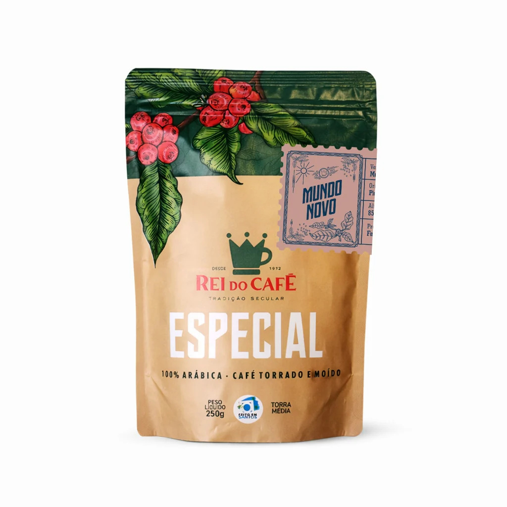
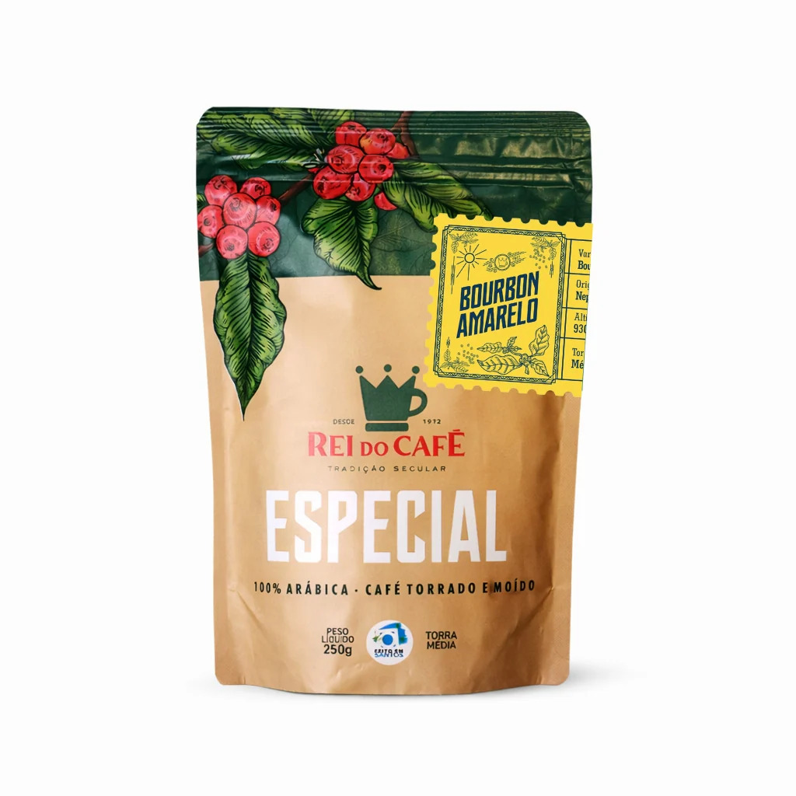
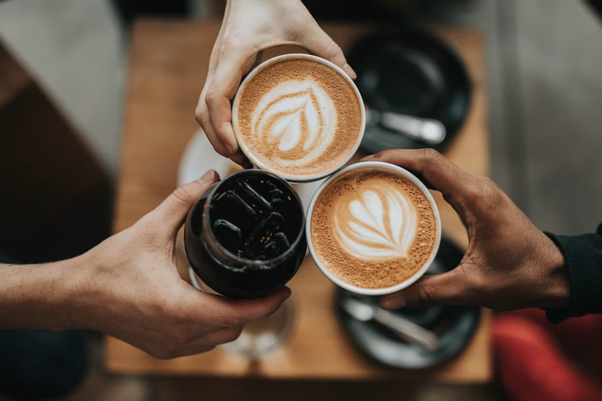

Special Blend Tradicional
Aqui o foco é a experiência de um café arábica: aroma mais expressivo, sabor mais definido e uma bebida que mantém personalidade do começo ao fim.

Descubra sabores únicos, selecionados diretamente dos melhores produtores brasileiros.
Assine o Clube do Café

Aqui o foco é a experiência de um café arábica: aroma mais expressivo, sabor mais definido e uma bebida que mantém personalidade do começo ao fim.

É um café Café Gourmet com grãos cultivados e selecionados com mais rigor, qualidade sensorial e uma experiência que vai além da xícara.

Reflete a doçura natural e o equilíbrio típicos da Serra da Canastra. O processo Natural, feito com frutos maduros secando ao sol, preserva açúcares e realça a maciez da bebida.

Se destaca pela doçura natural, acidez leve e corpo macio - aliada ao processo natural e à torra média fresca, entrega uma bebida equilibrada, aromática e fácil de apreciar ao longo do dia.

A Grão Mestre nasceu da paixão por cafés especiais. Trabalhamos com pequenos produtores para oferecer experiências únicas em cada xícara.